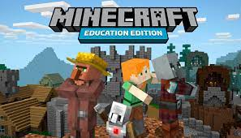

Minecrat Education
Minecraft: Education Edition és la versió educativa del videojoc Minecraft. Aquesta eina permet crear experiències d'aprenentatge basat en el joc amb què es podran treballar habilitats STEM, desenvolupar la creativitat i planteja experiències de col·laboració i resolució de problemes entre els estudiants.
